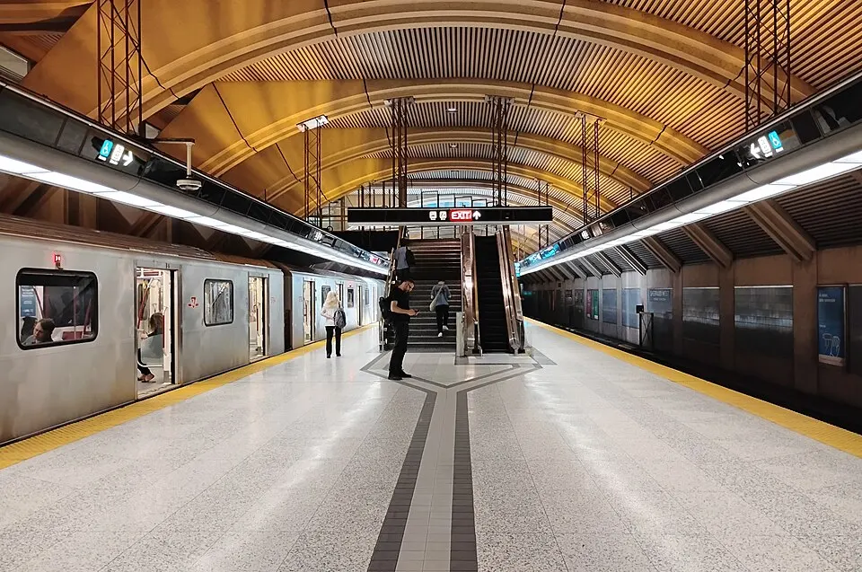

The one-stop extension beyond Wilson officially opened here under the name Downsview.
Downsview became Sheppard West ahead of the extension to Vaughan, distinguishing it from the new Downsview Park station.
 SignalToronto
← Transit dashboard
SignalToronto
← Transit dashboard